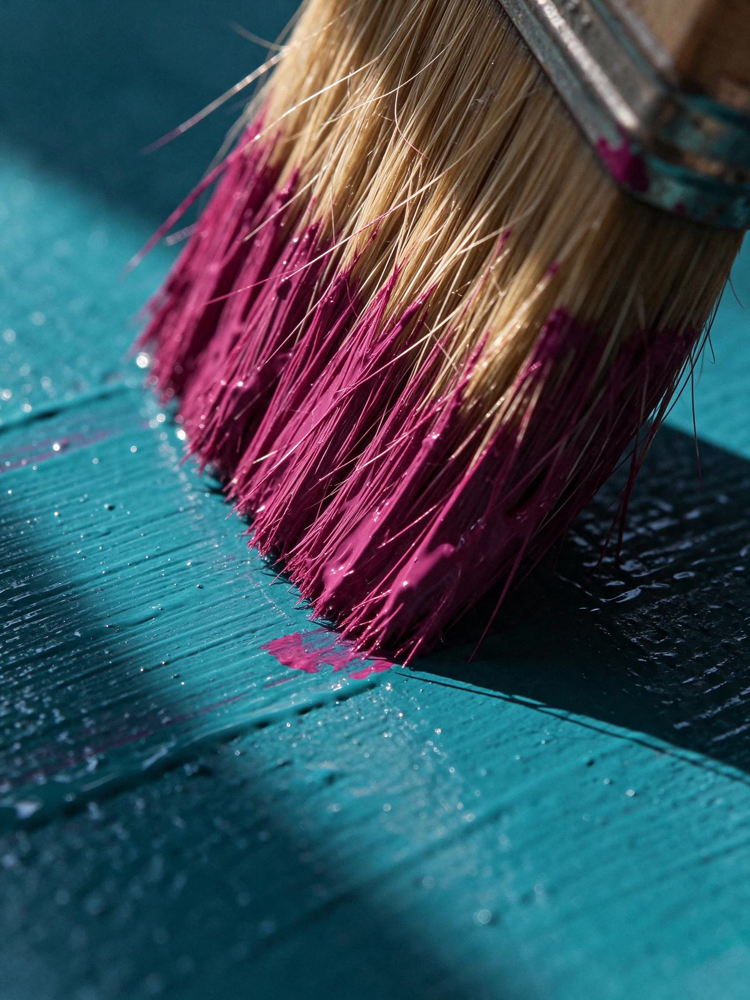
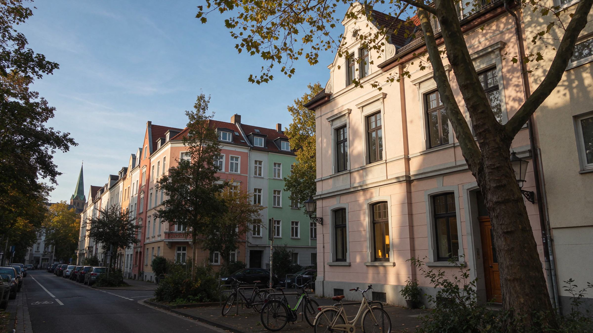

Wände mit HandschriftLasuren, die wie ein Schleier wirken, und Spachtelschläge, die sichtbar bleiben dürfen. Alte Techniken mit modernen Produkten von Caparol und Brillux.

Wände, Lacke, Spachteltechnik und Fassaden – sauber ausgeführt von Meister Ralf Berg und seinem Team, seit 1996.
Angebot anfragenEin Meister, sechs Fachkräfte und ein Versprechen seit 1996: zuverlässig, sauber und gewissenhaft arbeiten.
„Gemeinsam bringen wir Farbe ins Leben.“

Mitglied der Handwerkskammer und der Maler- und Lackierer-Innung Köln.

Wände mit HandschriftLasuren, die wie ein Schleier wirken, und Spachtelschläge, die sichtbar bleiben dürfen. Alte Techniken mit modernen Produkten von Caparol und Brillux.

Ihr Farbton, auf den PunktMit dem Brillux MF 100 lesen wir jeden vorhandenen Farbton direkt an der Wand ein, zu 98 % genau. Die Farbe wird individuell gemischt und ist in 1–2 Werktagen da.

Weg damit, schonendWir entfernen Graffiti mit Reinigern oder Strahlgut, ohne die Bausubstanz zu gefährden, und tragen danach auf Wunsch einen Schutzanstrich auf.

Geprüft saniertSachkunde bestätigt vom Landesinnungsverband Nordrhein (2007, anerkannt von der BG Bau) und vom TÜV Rheinland (2013). Mit Feuchtemessung und Protokoll.
Ihr Logo an der WandMit Negativfolie bringen wir fast jedes Motiv schnell und preiswert auf Firmenwände – unter anderem für die Kölner Haie.

Auch der BodenWir verlegen CV, PVC, Linoleum, Kautschuk, Teppich, Parkett und Laminat und beschichten Garagen, Keller, Lager und Balkone.
MessenWir halten das Messgerät an Ihre Wand, Tür oder Fassade und lesen den Farbton ein, auch den, den es in keinem Fächer mehr gibt.

MischenDie Messwerte gehen direkt zu Brillux. Dort wird Ihre Farbe individuell gemischt und in 1–2 Werktagen zu uns geliefert.

MalenWir streichen mit genau dem Ton, der zu Ihrem Raum passt. Schnell, präzise und ohne Ausbessern, das man später sieht.
Tippen Sie einen Ton an und sehen Sie ihn an der Wand dieses Kölner Altbauzimmers. Den passenden Farbton messen wir später bei Ihnen vor Ort.
Die Vorschau ist eine Annäherung. Echte Töne messen und bemustern wir vor Ort.


Wisch- und Spachteltechniken, Lackierarbeiten an Türen und Fenstern, Fassadenanstriche an Kölner Altbauten.
Wir übernehmen nicht nur die Malerarbeiten, sondern auf Wunsch die komplette Renovierung. Trockenbauer, Sanitär- und Heizungsinstallateure, Fliesenleger, Elektriker und Gerüstbauer koordinieren wir für Sie.
Für Privatkunden, Hausverwaltungen und Gewerbe
Für ein Angebot zur Schimmelsanierung erheben wir eine Gebühr,
die bei Beauftragung voll angerechnet wird.
Dombauhütte Köln · KEC Kölner Haie · Gaffel · Hotel Eden, Cölner Hofbräu Früh · Thomas Sabo · mymuesli · Aqualand Köln · GAG Immobilien · Deka Immobilien · Airport Business Hotel Köln-Deutz · The New Yorker Hotel · Deutsches Rotes Kreuz · Arbeiter-Samariter-Bund · Kassenzahnärztliche Bundesvereinigung · Starcar · Lucas-Nülle · Katholische Kirche St. Pius / St. Mauritius · Wohnbau Service Bonn · Wohnungsgenossenschaft am Vorgebirgspark · Paul’s Fish & Chips · und viele Privatkunden
Wir arbeiten im Großraum Köln/Bonn, im Rhein-Erft-Kreis und im Bergischen Land – am häufigsten in Zollstock, Sülz, Raderthal, Lindenthal, Klettenberg und Bayenthal.

Kurze Wege heißt: Wir sind schnell bei Ihnen, für den Besichtigungstermin, die Farbmessung und an jedem Arbeitstag pünktlich.